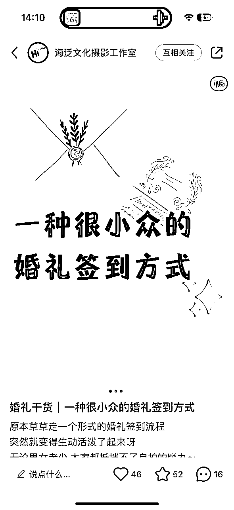
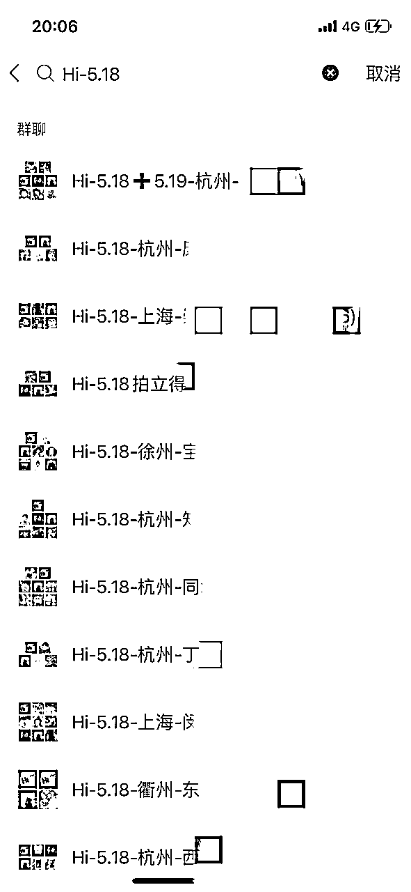

来源：https://n8ubaq7acj.feishu.cn/docx/BsCKdz1Xao9PtJxU3CqcM2FHnae
Hi～我大丁，我是从大一就开始搞钱的一个积极分子，写小说、当编辑、开淘宝、开外卖店，给美团当推广大使。大学期间最高的月收入是4w～后面进入职场5年，厌倦了职场里无法自己做主的无力感，去年就辞职创业啦！！！
本次拆解就是我离职后一年一直在深耕的一个项目，目前依靠项目赚到了人生中第一个百万。简单描述：
就是把一个可移动的大头贴设备，搬到婚礼上，服务宾客和新娘拍摄，可以15秒就打印出来照片，最后照片会贴到一本相册本上，宾客留下祝福，给到新人。
我当时了解到这个项目，是在2023年参加北京一位朋友婚礼的时候，她租赁了这个服务，大约总费用在6000元，我通过搜索发现这个设备在全国的普及率还很低，广东多一些。投入大概3万左右，15单可以回本，我在小红书、抖音都没有搜索到杭州有这样的服务，离最近的城市是上海，加上路费需要7000多元，非常昂贵。并且在很多账号下，都有各地的咨询因为距离太远在被拒绝掉。
开始执行前，分析了市面上当时做的不错的几个同行，通过评论区用户互动拆解了用户的需求和顾虑，判断【市场是有需求的】。
通过同行的朋友圈发布的内容，推测订单量，最终推算回本周期，判断了一下自己大概需要 2-3 个月回本。
为了低成本去测试可行性，我先在小红书冷启动了账号，看看是否能顺利引流。
因为我在上班搞副业的时候一直有在小红书上做莆田鞋引流，对这个平台的玩法比较熟悉。
第一个难题是素材，我通过加的同行的朋友圈、小红书等渠道收集了不带水印的各种素材去伪原创，作废了3个账号（因为盗取素材很容易被举报被限流封号，据说今年10月后规则更严格了）。那个时候发的，能够继续保留下来的笔记，都是一些文字为主的内容了～～如下图，供大家参考。

如果遇到了和我一样的违规情况，建议大家直接换号（除非是那种做了很久有一定粉丝量的账号确实可以走邮件申诉，因为很宝贵）。
获得多个手机号去注册小红书其实不困难，大家的手机卡都是可以去营业厅办理副卡的，都是和主卡在同一个套餐下使用，不会增加额外的成本。pdd也有300多块钱一个的iphone 6可以去买，除了卡顿一点，但是很便宜。
经过我的摸爬滚打，一周的时间加了20多个好友。在和用户的沟通过程中，一步步完成了价目表介绍的搭建、合同的草拟，服务流程的思考。
当时市面同行微信报价都是一张价格表的图，但是我一直认为【需要被教育的产品】是一定不能一下子发价格的，要先“传递价值”，所以我用的是微信笔记图片的方式做了一份价目表，先传递“我们是什么”、“为什么需要我们”再传递“多少钱”。因为用户在小红书只是完成了很浅层面的种草，大家还以为我们是和传统拍立得一样的东西，或者以为我们只是邮寄过去设备而不提供服务等等等。在和用户实际沟通中不断明确了他们的顾虑点、需求点，一步步完善了价目表的内容。
在我还没来得及准备合同的时候，就有客户成交了，当时快速去同行那儿蹭了一份合同（此处感谢一下同行大大们），火速修改了一版之后发给了客户。刚巧我自己婚礼定主持人的时候，走的是电子签，所以我速速套用了那个小程序进行了签约。
感谢第一位成交妹子的信任！！那个时候我的朋友圈还只发了两条广告～～
一周时间，拿下6笔订单后，我就知道这个业务是可以做了，于是我前往广东各个大头贴厂家做设备调研，对比不同价格之间的差异，花了3天时间，最终选择了一家最贵的。当时害怕自己是一时冲动，所以花了一整晚时间思考几个厂家之间的差异，在备忘录上罗列了10个差异，确保自己不是被公司的“文化氛围”所打动，而是被硬件本身的优势所打动。后来没想到，本次设备厂家的选择对我这个项目未来1年的发展带来了决定性的影响。
在设备购入后，面临的最大问题是缺发小红书的素材，我主动联系了本地的几个婚庆，提出了可以免费赠送两场服务，以此来熟悉设备+获得素材+和婚庆达成合作。后来当时赠送场次的婚礼，在未来的1年里也确实给我推荐了10多单。事实证明不存在绝对的“亏本”，所有的付出都会在某个时刻反馈给你的。
角色转变——成为厂家
随着订单不断增多，我在杭州投入了两台设备，南京投入了一台设备，手上成交的订单数也在10月份的时候，突破100了。
我们遇到一个问题，就是周边很多城市有非常多的用户咨询，但是加上路费价格都变得很高用户无法接受，比如去年我接过一单连云港的订单，加路费酒店新人大概花了有5000多块钱。于是我们萌生了自产设备，全国铺设的想法。
花了将近两个月的时间，解决了各个零配件的生产加工问题，刚好曾经我们购买设备的厂家他们这部分业务打算暂缓（因为他们发现卖设备盈利太低，售后很重很累，他们一场互动装置活动执行的报价在1w+，一场活动下来的利润比卖一台设备高），于是我们达成了战略合作，他们成为我们的软件供应商，并且只供应我们一家公司，提供软件侧的售后服务。
在正式启动售卖设备后，我们先在客服号的朋友圈进行了发布，消化了朋友圈内对这个项目感兴趣的新娘，售出了10台左右的设备，我们打算观测完数据再看是否继续这块业务。也担心坑了大家，割韭菜。
10月加入的小伙伴不仅都回本了，订单数量都比较不错，甚至有两位小伙伴提出了采购第二台的需求，于是我们开始在小红书发了宣传帖子，并且在有新娘咨询但是本地城市未覆盖的时候，主动告诉她们我们也是有售卖的服务。
这个时候遇到了一个很好的机会，就是我一个朋友的播客是做生意采访相关，她邀请我录了一期播客，那期播火了直接1w多的播放量。于是在3月多我们迅速扩张，覆盖了30多个城市。
并且随着城市覆盖的增多，我们小红书的内容能力也在不断增强，雇用了专门的运营来写内容，平均每天私域的好友数在40左右，我们给全国小伙伴进行订单派发的能力也在不断增强。
在这里分享两个关于小红书运营的心得：
1、做引流类账号，大家不要只会发“广告”，而要学会“提供价值和解决办法”。广告是告诉大家“我这里有xxx东西”，这样吸引来的是已经被种草的用户，他们面临的是“选哪个”的问题。而我们应该同时去做“为什么需要xxx东西”，比如我们最开始爆火的《婚礼迎宾的意义》，就是把内容聚焦到“婚礼迎宾”这个大话题下，而不是产品本身，然后在视频中传递出我们产品带来的迎宾时大家欢乐氛围感，让大家在无形中种草了我们产品。
2、现在小红书的引流越来越困难，建议有一定的业务体量的小伙伴都去开通一下聚光，可以自动回复微信不怕被禁言真的很香（每个月大概需要投放2000+）
7月进行了一波回访，上个季度售出的设备，80%都已经回本，未回本的小伙伴也是只差最后几单了，大大增加了我对这个项目的信心。于是我主动联系了一位做离职后创业采访的小伙伴，小红书账号名：《斐斐不会飞》，进行了一次视频的录制，视频发布后迎来了我们的第三次大增长，我们的城市覆盖直接破60，全国省会城市基本都有了我们的身影。
彼时我们的派单能力也不断增强，一个月能够向全国派发的订单数也破100单了。

阶段性的成功已经取得了！！
我们目前已经是行业里【城市覆盖数最高】、【小红书账号粉丝最高】的品牌啦！
一起熬过了9月10月的婚礼旺季，我们也在售后和软件上做了很多更新，软件的拍摄速度、打印速度都得到了质的飞跃，也加入了ai和ar的功能，来保持市场竞争力。
11月即将进入淡季，我们打算在11月进一步深入全国扩张。但是近期的数据观察发现，项目内卷速度还是比较快的，一些成都、深圳等一线城市都开始卷价格了，入场的人越来越多。但是三四线城市处于比较空白的情况。比如四川搜索成都可以找到10个做这个业务的，但是搜索泸州、德阳却完全搜不到本地的服务商。三四线城市的很多新娘愿意花高达800的路费去从省会城市把这个服务请到自己婚礼上，就是因为本地没有做这个服务的。
所以我们接下来的目标，就是扩充三四线城市，在2024年达成百城目标～
ps：大家如果想要快速链接我，可以直接微信找鱼丸奥～
1、门槛：投入资金3w多 周六日时间富裕
2、收益：一台设备收益在5k-15k/月
2、适合人群：有主业工作把这个当做副业 / 目前时间自由想找点事情做 / 有商业活动或者婚礼行业资源的
3、适合城市：一二线城市基本饱和，三四线城市还在风口上